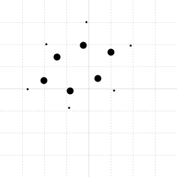
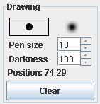
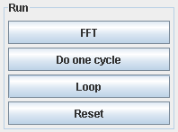
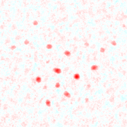
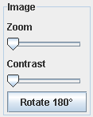
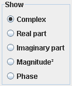
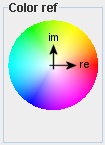
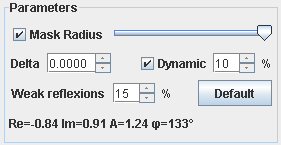
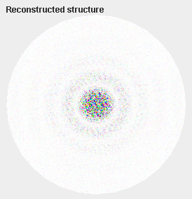

This applet illustrates the charge flipping (CF) algorithm for the solution of the phase problem in diffraction. The description of this algorithm can be found in chapter 7.4 of the eCrystallography course.
First you need to draw the starting structure which we shall attempt to solve by CF. You may also drop a bitmap file to the applet.
|
Original structure |
|
|  | Example of an input structure |
|  |
The drawing panel allows to place single atoms with different size and weights. You can select either flat or gaussian shapes. Flat shapes are black spots with sharp edges. Gaussian shapes have decreasing grey levels far from center. You may also choose the Pen size which defines the peak width and the Darkness which defines the height of the peaks. The position field indicates the position of the mouse cursor (in pixels) within the drawing panel. To erase part of your work, draw with Darkness = 0. |
|  |
The scheme in the middle indicates the sequence of steps for the CF algorithm. The top button leads you to the next step in the algorithm and changes accordingly to FFT, then to Set random phase and so on. The color indicator in the scheme changes accordingly. |
| Do one cycle: Perform a complete cycle in the algorithm. | |
| Loop: Run the algorithm until you press again to stop. | |
| Reset: Go back to the initial state. You may start again or draw another structure. |
|
Reconstructed structure
|
|
|  |
The structure solution proposed by CF following the inverse Fourier transformation step. The CF algorithm chooses arbitrarily an origin. Therefore you can drag the drawing with the mouse to move the origin. The image is self repeated in all directions. You can zoom by using the mouse wheel or by holding the shift key while dragging the mouse. |
|  |
Here is another way to zoom inside the reconstructed image. You can also adjust the contrast of the image, that is to increase the amplitudes in the image. The image might be occasionally rotated by 180° with respect to the original. The Rotate 180° button rotates the display for comparison purpose. |
|  | You can specify which part of the Fourier reconstruction you want to display. By default, complex values are converted to colors as indicated in the Color ref diagram. You may also select the real part, the imaginary part, the phases or the square of the magnitudes of the complex value. |
|  |
This indicates the color code for the complex values. When you move the mouse cursor over the Reconstructed structure image, the phase value is indicated. |
|  |
You might adjust the algorithm parameters in order to help in resolving the structure. Default button reset all parameters to their default values. The bottom line shows the complex components of the pixel under the mouse pointer, when you move the mouse over the Reconstructed structure image. |
|  |
This is a circular mask which simulates unobserved structure factors (F(H) is set to 0 outside its radius). The radius can be modified by the slider. You may also disable this mask. The mask is only visible over the reconstructed image at state called F. It becomes visible when the radius is modified with the slider. |
In the flipping charges algorithm, densities below a small but positive threshold get inverted. This threshold is specified by the parameter delta .
By default, the applet tries to find the best value for delta at each iteration of the algorithm. Delta is calculated so that 10% of all density pixels are above delta. You can of course adjust this percentage.
If you uncheck the box , the applet calculates delta only once at the first iteration and keeps using the same value for all future iterations.
The second variable parameter of the algorithm is the proportion of the reflections considered as weak in the Restore amplitudes step of the iteration cycle. Experience shows that about 20-40% of all reflections can be considered weak.
Weak reflections have their phase shifted by 90°. You can specify how much of the reflections you'll consider as weak.
The R-factor defined in chapter 7.4 of the eCrystallography course should converge to values close to zero once the structure is solved.
If you are using dynamic delta adjustment , which is the default mode, it is possible that delta decreases too fast. Try to manually raise the value of delta till the algorithm escapes from its local minimum. When the structure starts to be revealed, it is a good practice to check back the dynamic box so that the algorithm fine tunes the result.
Another method is to reset the procedure and start with a new set of random phases.